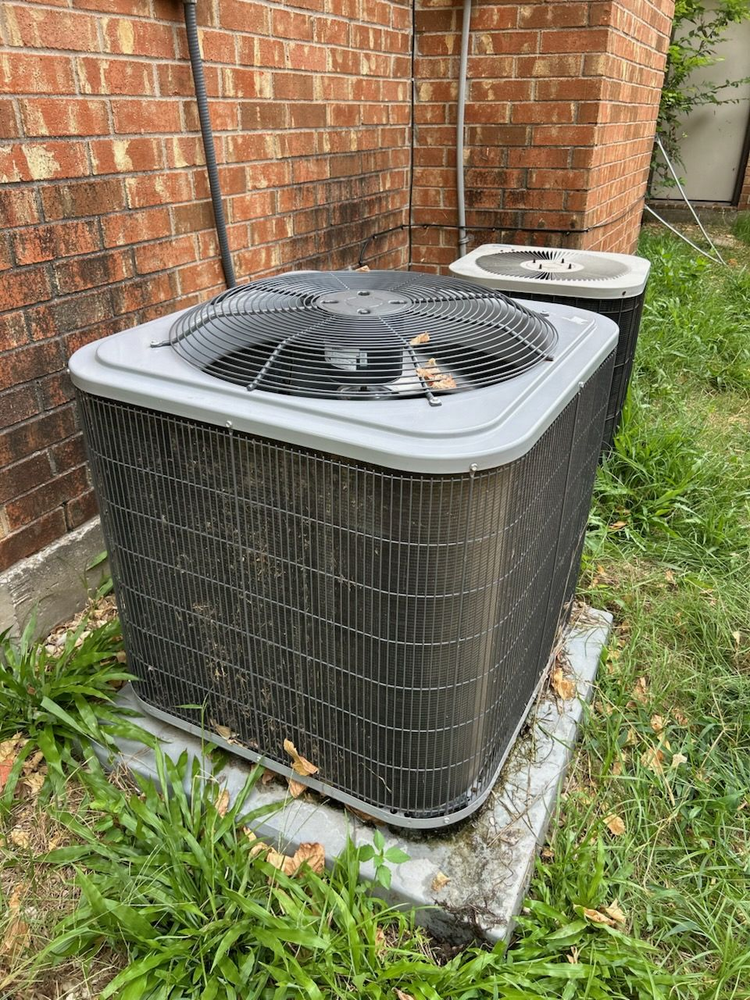

Real homes, real fixes
From side-yard AC units to garage exteriors, this is the kind of work we do across Fort Worth every week.



Roof and exterior
North Texas storms and summer heat are hard on the outside of a house. We fix the damage and keep water out.
After a storm
We walk the outside of the house, check gutters, siding, trim and fences, and send you photos of anything that needs attention.
- Gutter cleaning and downspout repair
- Siding, trim and fascia repair
- Exterior painting and caulking
- Fence and gate repair
- Outdoor faucet and hose bib winterizing
- Pressure washing
- Storm damage checks with photos
- Exterior lighting and fixtures
Inside the house
The punch list you keep meaning to get to, handled in one visit.
Doors suddenly sticking?
In Fort Worth that’s often clay soil moving the slab. We fix the door and tell you if it’s worth a closer look. Read our foundation guide
- Door, lock and hardware repair
- Drywall patching and texture
- Interior painting
- Light fixtures, fans and switches
- Faucets, toilets and minor plumbing fixes
- Trim, baseboards and cabinet repair
- Smoke alarm testing and replacement
- TV mounting, shelving and small upgrades
Yard and foundation
Fort Worth’s expansive clay shrinks in summer and swells after rain. Steady moisture and good drainage protect the slab.
Watering rules, simplified
Fort Worth lets you run soaker hoses and drip lines any day, any time. We install them on a timer so you don’t have to think about it.
- Soaker hose and drip line installs with timers
- Downspout extensions and drainage fixes
- Regrading flower beds away from the slab
- Sprinkler shutdown and winter draining
- Yard cleanup and debris removal
- Mulch, beds and basic landscaping
For landlords: make-ready between tenants
We maintain our own rental homes near TCU, so we know what a turnover takes. Here’s what our make-ready covers, in the order we do it.
-
1
Walk-through with photos
A documented condition report the day the tenant moves out.
-
2
Rekey the locks
Texas Property Code §92.156 requires rekeying no later than the seventh day after each tenant turnover.
-
3
Repair, patch and paint
Walls, doors, fixtures and flooring touch-ups so the home shows well.
-
4
Test smoke alarms
§92.258 requires confirming they work at the start of each tenancy. We test and log every one.
A Fort Worth home through the year
What we look after each season, tuned to North Texas weather.
“They fixed my door quickly and it works perfectly now. Super easy to work with!”
Send photos and a short description. You’ll get a price before we schedule.